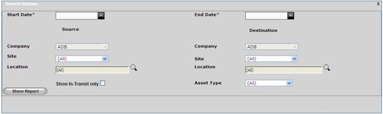
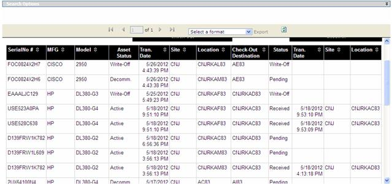

Asset Movement Report
Asset Movement report will show asset movement details within a specified date range. Report data can be filtered to show movement between specific source and destination locations and also data can be filtered to show in transit assets only.
To view Asset Movement report,
1. Navigate Reports>>Asset Movement in the DCTrackMobileWeb menu bar.
You will see the Asset Movement screen.

Figure 143: Asset Movement Screen
1. Provide the required information.
2.
Click Show report  button to display the report.
button to display the report.

Figure 144: Asset Movement Report
What is Status column?
“Pending” means the asset is in transition that means it is checked out but not checked in.
“Received” status indicates that asset is checked in successfully.
What is Check-Out Destination column?
During Check-Out using DCTrackMobile we specify a location as a destination for the check-out asset(s). This is called Check-Out Destination. We can select different location during actual check-in of the asset(s).